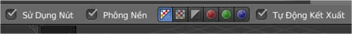
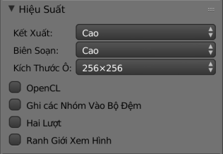

Властивості¶
Заголовок¶

Специфічні опції Компонування.
- Вжити Вузли -- Use Nodes
- Вмикає базову уставу з вузлом «Шари Зображу» -- Render Layer Node та вузлом «Композиція» -- Composite Node.
- Тло -- Backdrop
Вмикає використання тла за допомогою вузла «Оглядач» -- Viewer Node.
- Канали Тла -- Backdrop Channels
- Дивіться нижче.
- Авто Зображ -- Auto Render
- Вмикає автоматичне повторне зображування та компонування зміненого шару при зробленні кожної правки у 3D сцені.
Тло -- Backdrop¶
Орієнтир
| Панель: | «Регіон «Властивості» > Тло» -- |
|---|

Опції тла.
- Канали Тла -- Backdrop Channels
- Перемикає показ зображення у каналах «Колір» -- Color, «Колір і Альфа» -- Color and Alpha або тільки «Альфа» -- Alpha.
- Зумування -- Zoom
- Визначає, наскільки близько і великим буде показане зображення тла.
- Зсув -- Offset
- Дозволяє зсувати екранну позицію тла, яку також можна визначати, клацнувши на кнопці «Пересунути» Move або натиснувши Alt-MMB та вручну перемістивши його.
- Підгонка -- Fit
- Автоматично присуває-відсуває тло, щоб його розмір вписався у поточний розмір вікна Редактора Вузлів -- Node editor.
Продуктивність -- Performance¶
Орієнтир
| Панель: | «Права боковина «Властивості» > Продуктивність» -- |
|---|

Устави продуктивності.
Ця панель допомагає вам налаштувати продуктивність компонівника.
- Зображ -- Render
- Задає рівень якості для результатного зображування.
- Правка -- Edit
- Задає рівень якості при здійсненні правок.
- Розмір Скиби -- Chunk Size
- Максимальний розмір плитки (менші значення дають кращий розподіл по кількох потоках, але і більше втрат).
- OpenCL
- Дозволяє використовувати платформу OpenCL для допомоги у зображуванні. Як правило, ця опція повинна бути увімкнена крім випадків, коли ваша апаратура не підтримує OpenCL.
- Буферувати Групи -- Buffer Groups
- Вмикає буферування групових вузлів з метою збільшення швидкості за рахунок використання більше пам'яті.
- Два Проходи -- Two Pass
- Вмикає використання двох проходів виконання у ході редагування: перший прохід обчислює швидкі вузли, а другий прохід обчислює вже усі вузли.
- Границя Оглядача -- Viewer Border
- Дозволяє використовувати меншу площу огляду для тла та передогляду. Ця межа починає задаватися Ctrl-B та завершує задаватися натягненням прямокутної рамки виділу. Скорочення Ctrl-Alt-B відкидає цю межу назад до границь повного передогляду. Це опція тільки для передогляду -- результатне компонування у ході зображування ігнорує цю рамкову межу.
- Підсвітка -- Highlight
- Вмикає підсвічування вузлів. що були обчислені компонівником.